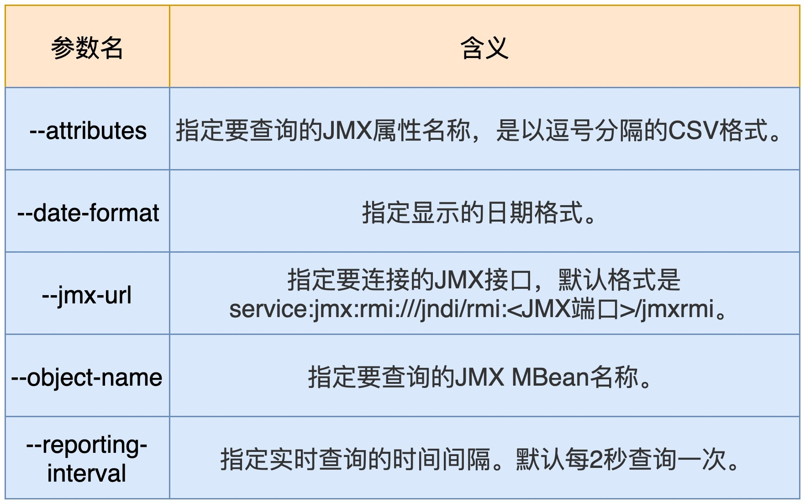
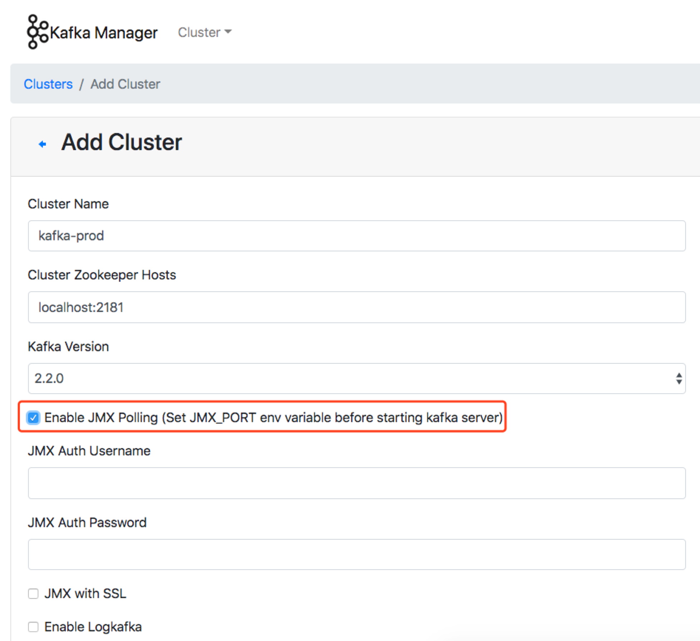
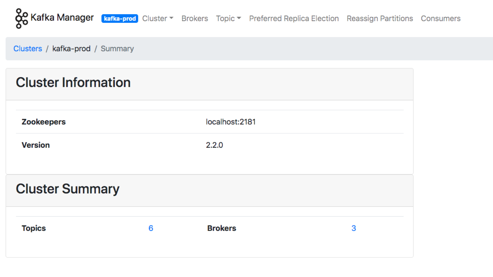
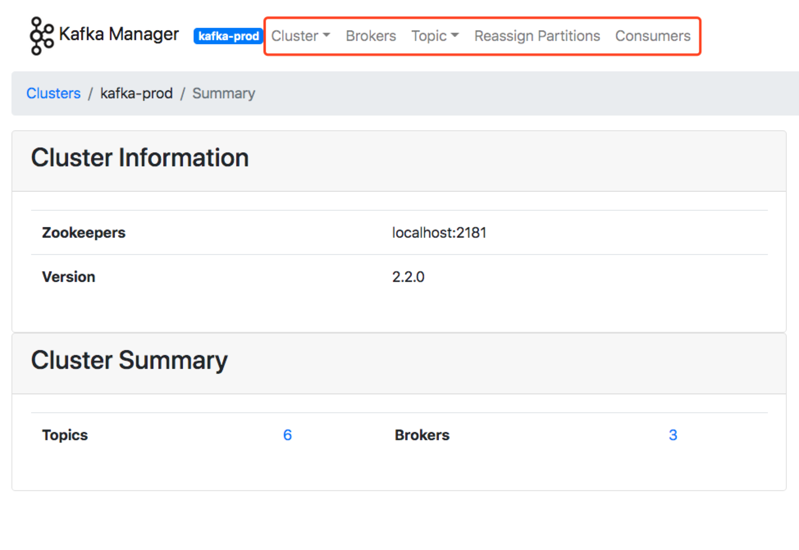
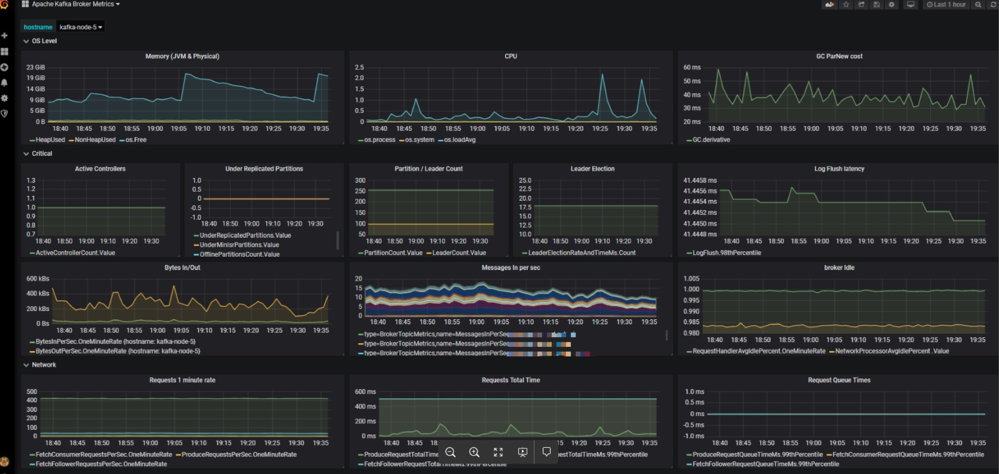
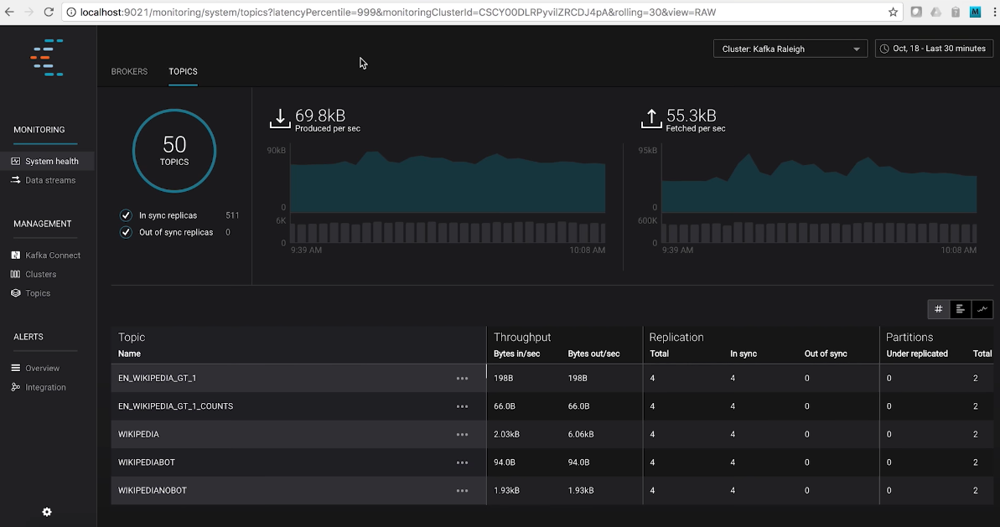
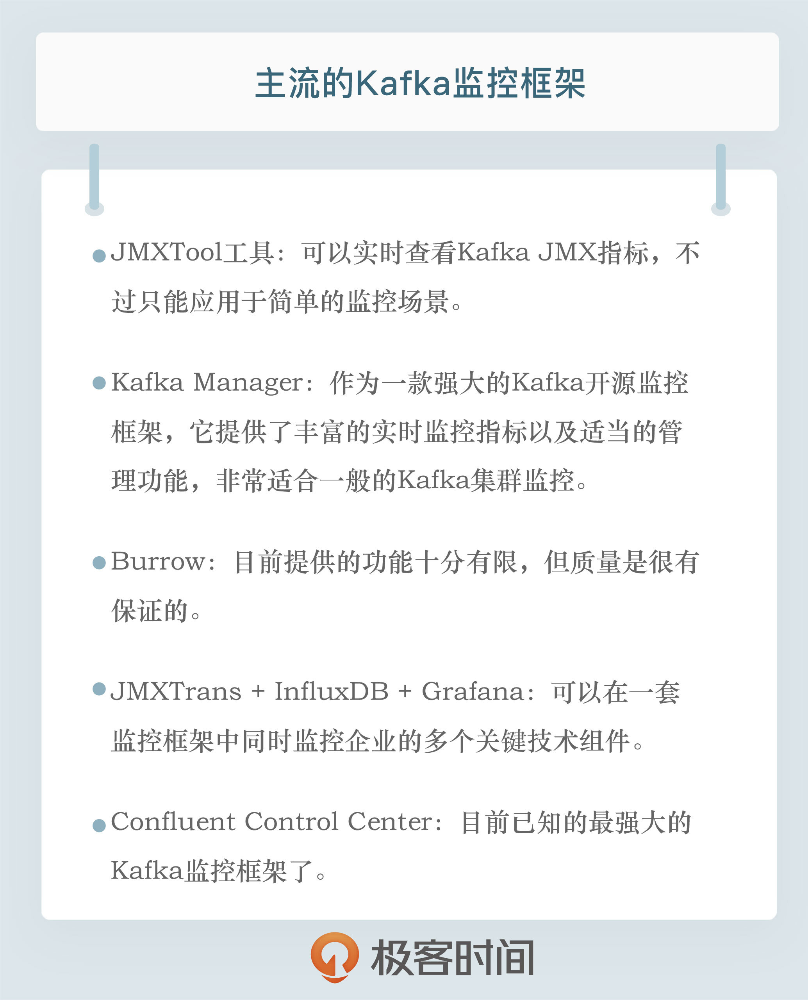

- 00 开篇词 为什么要学习Kafka？.md.html
- 01 消息引擎系统ABC.md.html
- 02 一篇文章带你快速搞定Kafka术语.md.html
- 03 Kafka只是消息引擎系统吗？.md.html
- 04 我应该选择哪种Kafka？.md.html
- 05 聊聊Kafka的版本号.md.html
- 06 Kafka线上集群部署方案怎么做？.md.html
- 07 最最最重要的集群参数配置（上）.md.html
- 08 最最最重要的集群参数配置（下）.md.html
- 09 生产者消息分区机制原理剖析.md.html
- 10 生产者压缩算法面面观.md.html
- 11 无消息丢失配置怎么实现？.md.html
- 12 客户端都有哪些不常见但是很高级的功能？.md.html
- 13 Java生产者是如何管理TCP连接的？.md.html
- 14 幂等生产者和事务生产者是一回事吗？.md.html
- 15 消费者组到底是什么？.md.html
- 16 揭开神秘的“位移主题”面纱.md.html
- 17 消费者组重平衡能避免吗？.md.html
- 18 Kafka中位移提交那些事儿.md.html
- 19 CommitFailedException异常怎么处理？.md.html
- 20 多线程开发消费者实例.md.html
- 21 Java 消费者是如何管理TCP连接的_.md.html
- 22 消费者组消费进度监控都怎么实现？.md.html
- 23 Kafka副本机制详解.md.html
- 24 请求是怎么被处理的？.md.html
- 25 消费者组重平衡全流程解析.md.html
- 26 你一定不能错过的Kafka控制器.md.html
- 27 关于高水位和Leader Epoch的讨论.md.html
- 28 主题管理知多少_.md.html
- 29 Kafka动态配置了解下？.md.html
- 30 怎么重设消费者组位移？.md.html
- 31 常见工具脚本大汇总.md.html
- 32 KafkaAdminClient：Kafka的运维利器.md.html
- 33 Kafka认证机制用哪家？.md.html
- 34 云环境下的授权该怎么做？.md.html
- 35 跨集群备份解决方案MirrorMaker.md.html
- 36 你应该怎么监控Kafka？.md.html
- 37 主流的Kafka监控框架.md.html
- 38 调优Kafka，你做到了吗？.md.html
- 39 从0搭建基于Kafka的企业级实时日志流处理平台.md.html
- 40 Kafka Streams与其他流处理平台的差异在哪里？.md.html
- 41 Kafka Streams DSL开发实例.md.html
- 42 Kafka Streams在金融领域的应用.md.html
- 加餐 搭建开发环境、阅读源码方法、经典学习资料大揭秘.md.html
- 用户故事 黄云：行百里者半九十.md.html
- 结束语 以梦为马，莫负韶华！.md.html
- 捐赠
37 主流的Kafka监控框架
你好，我是胡夕。今天我要和你分享的主题是：那些主流的Kafka监控框架。
在上一讲中，我们重点讨论了如何监控Kafka集群，主要是侧重于讨论监控原理和监控方法。今天，我们来聊聊具体的监控工具或监控框架。
令人有些遗憾的是，Kafka社区似乎一直没有在监控框架方面投入太多的精力。目前，Kafka的新功能提议已超过500个，但没有一个提议是有关监控框架的。当然，Kafka的确提供了超多的JMX指标，只是，单独查看这些JMX指标往往不是很方便，我们还是要依赖于框架统一地提供性能监控。
也许，正是由于社区的这种“不作为”，很多公司和个人都自行着手开发Kafka监控框架，其中并不乏佼佼者。今天我们就来全面地梳理一下主流的监控框架。
JMXTool工具
首先，我向你推荐JMXTool工具。严格来说，它并不是一个框架，只是社区自带的一个工具罢了。JMXTool工具能够实时查看Kafka JMX指标。倘若你一时找不到合适的框架来做监控，JMXTool可以帮你“临时救急”一下。
Kafka官网没有JMXTool的任何介绍，你需要运行下面的命令，来获取它的使用方法的完整介绍。
bin/kafka-run-class.sh kafka.tools.JmxTool
JMXTool工具提供了很多参数，但你不必完全了解所有的参数。我把主要的参数说明列在了下面的表格里，你至少要了解一下这些参数的含义。

现在，我举一个实际的例子来说明一下如何运行这个命令。
假设你要查询Broker端每秒入站的流量，即所谓的JMX指标BytesInPerSec，这个JMX指标能帮助你查看Broker端的入站流量负载，如果你发现这个值已经接近了你的网络带宽，这就说明该Broker的入站负载过大。你需要降低该Broker的负载，或者将一部分负载转移到其他Broker上。
下面这条命令，表示每5秒查询一次过去1分钟的BytesInPerSec均值。
bin/kafka-run-class.sh kafka.tools.JmxTool --object-name kafka.server:type=BrokerTopicMetrics,name=BytesInPerSec --jmx-url service:jmx:rmi:///jndi/rmi://:9997/jmxrmi --date-format "YYYY-MM-dd HH:mm:ss" --attributes OneMinuteRate --reporting-interval 1000
在这条命令中，有几点需要你注意一下。
设置 –jmx-url参数的值时，需要指定JMX端口。在这个例子中，端口是9997，在实际操作中，你需要指定你的环境中的端口。
由于我是直接在Broker端运行的命令，因此就把主机名忽略掉了。如果你是在其他机器上运行这条命令，你要记得带上要连接的主机名。
关于 –object-name参数值的完整写法，我们可以直接在Kafka官网上查询。我们在前面说过，Kafka提供了超多的JMX指标，你需要去官网学习一下它们的用法。我以ActiveController JMX指标为例，介绍一下学习的方法。你可以在官网上搜索关键词ActiveController，找到它对应的 –object-name，即kafka.controller:type=KafkaController,name=ActiveControllerCount，这样，你就可以执行下面的脚本，来查看当前激活的Controller数量。
$ bin/kafka-run-class.sh kafka.tools.JmxTool –object-name kafka.controller:type=KafkaController,name=ActiveControllerCount –jmx-url service:jmx:rmi:///jndi/rmi://:9997/jmxrmi –date-format “YYYY-MM-dd HH:mm:ss” –reporting-interval 1000 Trying to connect to JMX url: service:jmx:rmi:///jndi/rmi://:9997/jmxrmi. “time”,“kafka.controller:type=KafkaController,name=ActiveControllerCount:Value” 2019-08-05 15:08:30,1 2019-08-05 15:08:31,1
总体来说，JMXTool是社区自带的一个小工具，对于一般简单的监控场景，它还能应付，但是它毕竟功能有限，复杂的监控整体解决方案，还是要依靠监控框架。
Kafka Manager
说起Kafka监控框架，最有名气的当属Kafka Manager了。Kafka Manager是雅虎公司于2015年开源的一个Kafka监控框架。这个框架用Scala语言开发而成，主要用于管理和监控Kafka集群。
应该说Kafka Manager是目前众多Kafka监控工具中最好的一个，无论是界面展示内容的丰富程度，还是监控功能的齐全性，它都是首屈一指的。不过，目前该框架已经有4个月没有更新了，而且它的活跃的代码维护者只有三四个人，因此，很多Bug或问题都不能及时得到修复，更重要的是，它无法追上Apache Kafka版本的更迭速度。
当前，Kafka Manager最新版是2.0.0.2。在其Github官网上下载tar.gz包之后，我们执行解压缩，可以得到kafka-manager-2.0.0.2目录。
之后，我们需要运行sbt工具来编译Kafka Manager。sbt是专门用于构建Scala项目的编译构建工具，类似于我们熟知的Maven和Gradle。Kafka Manager自带了sbt命令，我们直接运行它构建项目就可以了：
./sbt clean dist
经过漫长的等待之后，你应该可以看到项目已经被成功构建了。你可以在Kafka Manager的target/universal目录下找到生成的zip文件，把它解压，然后修改里面的conf/application.conf文件中的kafka-manager.zkhosts项，让它指向你环境中的ZooKeeper地址，比如：
kafka-manager.zkhosts="localhost:2181"
之后，运行以下命令启动Kafka Manager：
bin/kafka-manager -Dconfig.file=conf/application.conf -Dhttp.port=8080
该命令指定了要读取的配置文件以及要启动的监听端口。现在，我们打开浏览器，输入对应的IP:8080，就可以访问Kafka Manager了。下面这张图展示了我在Kafka Manager中添加集群的主界面。

注意，要勾选上Enable JMX Polling，这样你才能监控Kafka的各种JMX指标。下图就是Kafka Manager框架的主界面。

从这张图中，我们可以发现，Kafka Manager清晰地列出了当前监控的Kafka集群的主题数量、Broker数量等信息。你可以点击顶部菜单栏的各个条目去探索其他功能。
除了丰富的监控功能之外，Kafka Manager还提供了很多运维管理操作，比如执行主题的创建、Preferred Leader选举等。在生产环境中，这可能是一把双刃剑，毕竟这意味着每个访问Kafka Manager的人都能执行这些运维操作。这显然是不能被允许的。因此，很多Kafka Manager用户都有这样一个诉求：把Kafka Manager变成一个纯监控框架，关闭非必要的管理功能。
庆幸的是，Kafka Manager提供了这样的功能。你可以修改config下的application.conf文件，删除application.features中的值。比如，如果我想禁掉Preferred Leader选举功能，那么我就可以删除对应KMPreferredReplicaElectionFeature项。删除完之后，我们重启Kafka Manager，再次进入到主界面，我们就可以发现之前的Preferred Leader Election菜单项已经没有了。

总之，作为一款非常强大的Kafka开源监控框架，Kafka Manager提供了丰富的实时监控指标以及适当的管理功能，非常适合一般的Kafka集群监控，值得你一试。
Burrow
我要介绍的第二个Kafka开源监控框架是Burrow。Burrow是LinkedIn开源的一个专门监控消费者进度的框架。事实上，当初其开源时，我对它还是挺期待的。毕竟是LinkedIn公司开源的一个框架，而LinkedIn公司又是Kafka创建并发展壮大的地方。Burrow应该是有机会成长为很好的Kafka监控框架的。
然而令人遗憾的是，它后劲不足，发展非常缓慢，目前已经有几个月没有更新了。而且这个框架是用Go写的，安装时要求必须有Go运行环境，所以，Burrow在普及率上不如其他框架。另外，Burrow没有UI界面，只是开放了一些HTTP Endpoint，这对于“想偷懒”的运维来说，更是一个减分项。
如果你要安装Burrow，必须要先安装Golang语言环境，然后依次运行下列命令去安装Burrow：
$ go get github.com/linkedin/Burrow
$ cd $GOPATH/src/github.com/linkedin/Burrow
$ dep ensure
$ go install
等一切准备就绪，执行Burrow启动命令就可以了。
$GOPATH/bin/Burrow --config-dir /path/containing/config
总体来说，Burrow目前提供的功能还十分有限，普及率和知名度都是比较低的。不过，它的好处是，该项目的主要贡献者是LinkedIn团队维护Kafka集群的主要负责人，所以质量是很有保证的。如果你恰好非常熟悉Go语言生态，那么不妨试用一下Burrow。
JMXTrans + InfluxDB + Grafana
除了刚刚说到的专属开源Kafka监控框架之外，其实现在更流行的做法是，在一套通用的监控框架中监控Kafka，比如使用JMXTrans + InfluxDB + Grafana的组合。由于Grafana支持对JMX指标的监控，因此很容易将Kafka各种JMX指标集成进来。
我们来看一张生产环境中的监控截图。图中集中了很多监控指标，比如CPU使用率、GC收集数据、内存使用情况等。除此之外，这个仪表盘面板还囊括了很多关键的Kafka JMX指标，比如BytesIn、BytesOut和每秒消息数等。将这么多数据统一集成进一个面板上直观地呈现出来，是这套框架非常鲜明的特点。

与Kafka Manager相比，这套监控框架的优势在于，你可以在一套监控框架中同时监控企业的多个关键技术组件。特别是对于那些已经搭建了该监控组合的企业来说，直接复用这套框架可以极大地节省运维成本，不失为一个好的选择。
Confluent Control Center
最后，我们来说说Confluent公司发布的Control Center。这是目前已知的最强大的Kafka监控框架了。
Control Center不但能够实时地监控Kafka集群，而且还能够帮助你操作和搭建基于Kafka的实时流处理应用。更棒的是，Control Center提供了统一式的主题管理功能。你可以在这里享受到Kafka主题和Schema的一站式管理服务。
下面这张图展示了Control Center的主题管理主界面。从这张图中，我们可以直观地观测到整个Kafka集群的主题数量、ISR副本数量、各个主题对应的TPS等数据。当然，Control Center提供的功能远不止这些，你能想到的所有Kafka运维管理和监控功能，Control Center几乎都能提供。

不过，如果你要使用Control Center，就必须使用Confluent Kafka Platform企业版。换句话说，Control Center不是免费的，你需要付费才能使用。如果你需要一套很强大的监控框架，你可以登录Confluent公司官网，去订购这套真正意义上的企业级Kafka监控框架。
小结
其实，除了今天我介绍的Kafka Manager、Burrow、Grafana和Control Center之外，市面上还散落着很多开源的Kafka监控框架，比如Kafka Monitor、Kafka Offset Monitor等。不过，这些框架基本上已经停止更新了，有的框架甚至好几年都没有人维护了，因此我就不详细展开了。如果你是一名开源爱好者，可以试着到开源社区中贡献代码，帮助它们重新焕发活力。
值得一提的是，国内最近有个Kafka Eagle框架非常不错。它是国人维护的，而且目前还在积极地演进着。根据Kafka Eagle官网的描述，它支持最新的Kafka 2.x版本，除了提供常规的监控功能之外，还开放了告警功能（Alert），非常值得一试。
总之，每个框架都有自己的特点和价值。Kafka Manager框架适用于基本的Kafka监控，Grafana+InfluxDB+JMXTrans的组合适用于已经具有较成熟框架的企业。对于其他的几个监控框架，你可以把它们作为这两个方案的补充，加入到你的监控解决方案中。

开放讨论
如果想知道某台Broker上是否存在请求积压，我们应该监控哪个JMX指标？
欢迎写下你的思考和答案，我们一起讨论。如果你觉得有所收获，也欢迎把文章分享给你的朋友。
© 2019 - 2023 Liangliang Lee. Powered by gin and hexo-theme-book.